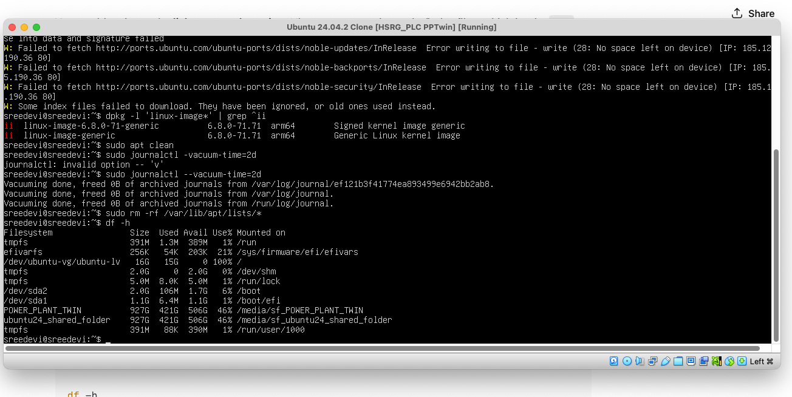

Recovering VM
At GRUB Shell:
🔧 Steps to boot into text console At the grub> prompt, run these exact commands:
set root=(hd0,gpt2)
linux /vmlinuz root=/dev/ubuntu-vg/ubuntu-lv ro systemd.unit=multi-user.target
initrd /initrd.img
boot
📌 Explanation
-
set root=(hd0,gpt2) → tells GRUB where /boot is.
-
linux /vmlinuz root=/dev/ubuntu-vg/ubuntu-lv ro systemd.unit=multi-user.target
-
/vmlinuz → your kernel (symlink to latest: vmlinuz-6.8.0-71-generic).
-
root=/dev/ubuntu-vg/ubuntu-lv → because your root filesystem is inside LVM (lvm/ubuntu--vg-ubuntu--lv showed up in your ls).
-
systemd.unit=multi-user.target → boots into text console instead of GUI.
- initrd /initrd.img → loads your initramfs.
- boot → starts the kernel.
🖥️ After booting You’ll land in a text login prompt. Login with your username/password. Then fix the problematic services:
sudo systemctl disable NetworkManager-wait-online.service
sudo systemctl mask NetworkManager-wait-online.service
sudo apt update
sudo apt install --reinstall gdm3 virtualbox-guest-utils virtualbox-guest-x11 virtualbox-guest-dkms
sudo systemctl set-default multi-user.target
Reboot:
sudo reboot
You should now get a stable text login every time. Once everything is fixed, you can switch back to GUI with:
sudo systemctl set-default graphical.target
sudo systemctl isolate graphical.target
Checking space left on VM:
↑ Share se into data and signature falled
Ubuntu 24.04.2 Clone [HSRG_PLC PPTwin] [Running]
W: Failed to fetch http://ports.ubuntu.com/ubuntu-ports/dists/noble-updates/InRelease
Error writing to file - write (28: No space left on device) [IP: 185.12 190.36 80]
W: Failed to fetch http://ports.ubuntu.com/ubuntu-ports/dists/noble-backports/InRelease Error writing to file write (28: No space left on device) [IP: 185. 5.190.36 80]
W: Failed to fetch http://ports.ubuntu.com/ubuntu-ports/dists/noble-security/InRelease Error writing to file - write (28: No space left on device) [IP: 185.1 .190.36 80]
W: Some index files failed to download. They have been ignored, or old ones used instead.
sreedevi@sreedevi:~$ dpkg -1 'linux-image*' | grep ^ii ii
linux-image-6.8.0-71-generic ii 6.8.0-71.71 arm64 Signed kernel image generic
linux-image-generic 6.8.0-71.71 arm64 Generic Linux kernel image
sreedevi@sreedevi :~$ sudo apt clean
sreedevi@sreedevi:~$ sudo journalctl -vacuum-time=2d
journalctl: invalid option -- 'v'
sreedevi@sreedevi :~$ sudo journalctl --vacuum-time=2d
Vacuuming done, freed B of archived journals from /var/log/journal/ef 121b3f41774ea893499e6942bb2ab8.
Vacuuming done, freed B of archived journals from /var/log/journal.
Vacuuming done, freed B of archived journals from /run/log/journal.
sreedevi@sreedevi:~$ sudo rm -rf /var/lib/apt/lists/*
sreedevi@sreedevi: "$ df -h
Filesystem Size Used Avail Use% Mounted on
tmpfs 391M 1.3M 389M 1% /run
efivarfs 256K 54K 203K 21% /sys/firmware/efi/efivars
/dev/ubuntu-vg/ubuntu-lv 16G 15G Ø 100% /
tmpfs 2.0G Ө 2.0G 0% /dev/shm
tmpfs 5.0M 8.0K 5.0M 1% /run/lock
/dev/sda2 2.0G 106M 1.7G 6% /boot
/dev/sda1 1.1G 6.4M 1.1G 1% /boot/efi
POWER PLANT_TWIN 927G 421G 506G 46% /media/sf_POWER_PLANT_TWIN
ubuntu24_shared_folder 927G 421G 506G 46% /media/sf_ubuntu24_shared_folder
tmpfs 391M 88K 390M 1% /run/user/1000
sreedevi@sreedevi:~$

- Your root filesystem is: /dev/ubuntu-vg/ubuntu-lv 16G 15G 0 100% / So your root volume is 16 GB and completely full. That’s why apt fails and the VM hangs. Your /boot and /boot/efi partitions have space, but they don’t help since all system packages/logs live under /.
Free some emergency space
Just enough so apt and the system can breathe:
# Clear apt cache (already done, but run again just in case)
sudo apt clean
# Remove old logs
sudo rm -rf /var/log/journal/*
# Truncate big logs if they exist
sudo truncate -s 0 /var/log/*.log
sudo truncate -s 0 /var/log/*/*.log
Check if there is free space in the volume group
sreedevi@sreedevi:~$ sudo vgdisplay ubuntu-vg
Volume group
VG Name ubuntu-vg
System ID
Format 1vm2
Metadata Areas 1
Metadata Sequence No 2
VG Access read/write
VG Status resizable
MAX LV Ө
Cur LV 1
Open LV 1
Max PV Ө
Cur PV 1
Act PV 1
VG Size <31.95 GiB
PE Size 4.00 MiB
Total PE 8178
Alloc PE Size 4089 / 15.97 GiB
Free PE Size 4089/15.97 GiB
VG UUID TkZXdq-3dSV-izeB-Ewns-UJJn-1VaN-FLMNwc
sreedevi@sreedevi:~$

This means the volume group ubuntu-vg is ~32 GB total, but only 16 GB is allocated to / (/dev/ubuntu-vg/ubuntu-lv).
So this means you already have ~16GB free inside the VG ready to use - you don't even need to resize the VirtualBox disk.
Expand your root filesystem
Run these 2 commmands:
# Extend root LV to use all free space
sudo lvextend -l +100%FREE /dev/ubuntu-vg/ubuntu-lv
# Resize filesystem to fill LV
sudo resize2fs /dev/ubuntu-vg/ubuntu-lv
sreedevi@sreedevi:~$ sudo lvextend -1 +100%FREE /dev/ubuntu-vg/ubuntu-lv
[sudo] password for sreedevi:
Size of logical volume ubuntu-vg/ubuntu-lv changed from 15.97 GiB (4089 extents) to <31.95 GiB (8178 extents).
Logical volume ubuntu-vg/ubuntu-lv successfully resized.
sreedevi@sreedevi :~$ sudo resize2fs /dev/ubuntu-vg/ubuntu-lv resize2fs 1.47.0 (5-Feb-2023)
Filesystem at /dev/ubuntu-vg/ubuntu-ly is mounted on ; on-line resizing required old_desc_blocks = 2, new_desc_blocks = 4
The filesystem on /dev/ubuntu-vg/ubuntu-lv is now 8374272 (4k) blocks long.
sreedevi@sreedevi: df -h
Filesystem Size Used Avail Use% Mounted on
tmpfs 391M 1.3M 389M 1% /run
efivarfs 256K 54K 203K 21% /sys/firmware/efi/efivars
/dev/ubuntu-vg/ubuntu-lv 32G 15G 16G 50% /
tmpfs 2.0G Ө 2.0G 0% /dev/shm
tmpfs 5.0м 8.ок 5.0м 1% /run/lock
/dev/sda2 2.0G 106M 1.7G 6% /boot
/dev/sda1 1.1G 6.4M 1.1G 1% /boot/efi
POWER PLANT_TWIN 927G 422G 506G 46% /media/sf_POWER_PLANT_TWIN
ubuntu24_shared_folder 927G 422G 506G 46% /media/sf_ubuntu24_shared_folder
tmpfs 391M 88K 390M 1% /run/user/1000
sreedevi@sreedevi:~$
issue faced when trying steps
sreedevi@sreedevi :~$ sudo apt install --reinstall gdm3 virtualbox-guest-utils virtualbox-guest-x11 virtualbox-guest-dkms.
Reading package lists...
Done Building dependency tree...
Done Reading state information...
Done E: Unable to locate package virtualbox-guest-utils
E: Unable to locate package virtualbox-guest-x11
E: Unable to locate package virtualbox-guest-dkms
sreedevi@sreedevi: "$
Steps to fix boot delay from "waiting for network online" and reconfigure GDM for next boot:
sudo systemctl disable NetworkManager-wait-online.service sudo systemctl mask NetworkManager-wait-online.service sudo apt update sudo apt install spice-vdagent virtualbox-guest-additions-iso sudo systemctl set-default multi-user.target
sudo systemctl set-default graphical.target # switching to GUI
Prompt from me:
After Select Advanced options for Ubuntu → recovery mode. Choose Root – Drop to root shell prompt. the prompt says enter for maintenance and press control D to continue after I pressed control d I see root@sreedevi how should I proceed to do these : sudo systemctl disable NetworkManager-wait-online.service sudo systemctl mask NetworkManager-wait-online.service sudo apt update sudo apt install virtualbox-guest-utils virtualbox-guest-x11 virtualbox-guest-dkms sudo dpkg-reconfigure gdm3
If root filesystem is mounted as read-only :
mount -o remount,rw /
After Select Advanced options for Ubuntu -> recovery mode